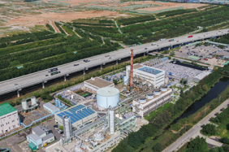

자원이 부족한 대한민국, 이제 폐기물로 에너지를 만듭니다. 폐기물을 자원화·에너지화하는 폐자원에너지타운을 조성하여 지속 가능한 미래 가치를 생산합니다.
자원순환형 폐기물 처리시스템 구축
50MW 발전시설

50MW 발전시설은 발전규모와 포집되는 매립가스 양에서 세계 최대 규모로 지구온난화의 주범인 메탄가스(매립가스의 약 50%)를 연료로 활용해 전기를 생산하는 친환경 발전시설입니다. 매립가스 분해 처리와 화서연료 대체효과에 따른 온실가스 감축에 따라 유엔기후변화협약(UNFCCC)으로부터 청정개발체제(CDM) 사업으로 인정받았습니다. 이를 통해 탄소배출권을 획득하는 등 지구 온난화 방지를 위한 국제적인 대응에도 적극 동참하고 있습니다.